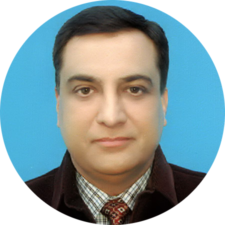

|  |
ENGR. Maj (Retd) SYED ZULFIQAR ALICURRICULUM VITAEcaptzulfiqar@hotmail.comzulfiqar33057@gmail.com |
To deliver, motivate and impart in accomplishing projects with maximum
compliance utilizing vision, judgment and management skills acquired during
23 years of diversified experience full of strong adherence to Project’s
Technical Specifications coupled with profound professional ethics along
with an aim of sustainable growth and development of self and employer
backed by competitively differentiating & mutually reinforcing system
of capabilities.
| COMPANY | NATURE OF PROJECT | POSITION HELD | OWNER | DURATION |
|---|---|---|---|---|
| Reliable Engineering Services & ZKB JV | High Rise Blocks of PKLI Hospital | Project Manager | Shifa Foundations Islamabad Pakistan | 2018-todate |
| Reliable Engineering Services & ZKB JV | High rise buildings and bridges for elevated train track (Orange Line) | Project Manager | Lahore Development Authority (LDA) | 2016-2018 |
| Reliable Engineering Services & ZKB JV | Overhead bridge | Project Manager | LDA | 2016-2016 |
| National University and Technology Pakistan (NUST) | University Faculties | Assistant Professor | NUST | 2014-2016 |